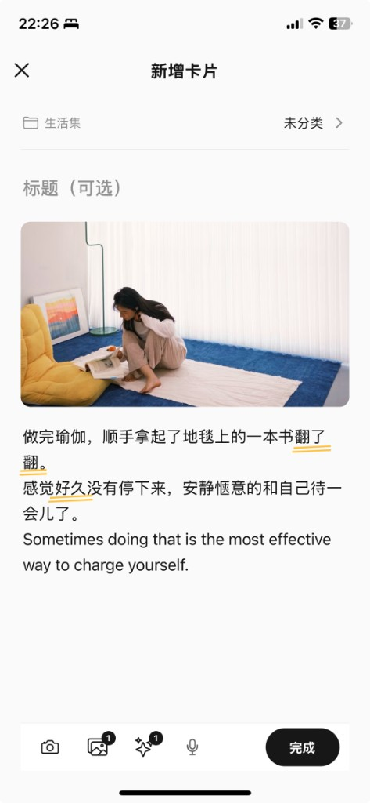
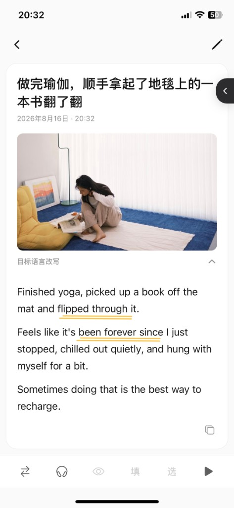
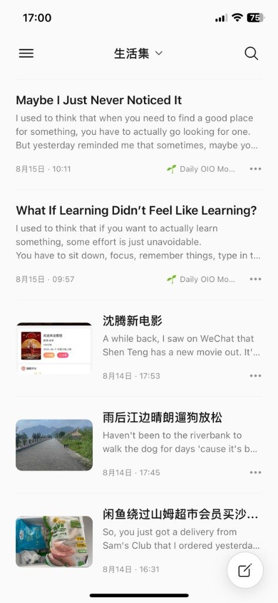

制作一张 Card
一张 Card 从生活开始。文字、照片，或者两者一起，都可以成为一段属于你的英文。
捕捉生活
用中、英或混合语言记下此刻想说的事。也可以直接拍照或选择最近照片，让画面本身成为记录的一部分。
先说真实的话，不必先把它写成“英语作文”。

形成自然表达
OIO 可以把原始记录改写成自然英文，也可以整理输入、生成目标语言回复，并为图片生成描述。
「OIO 的发现」会从整段内容里找到值得记住的表达。长按词语还可以查词或挖空，不必先处理整篇。

放进生活集
Card 可以进入不同的生活集。它不是学科分类，而是你自己的生活线索：旅行、工作、家人，或者只有你明白的名字。
随着记录变多，生活集会成为一份用英文保存的个人经历。
